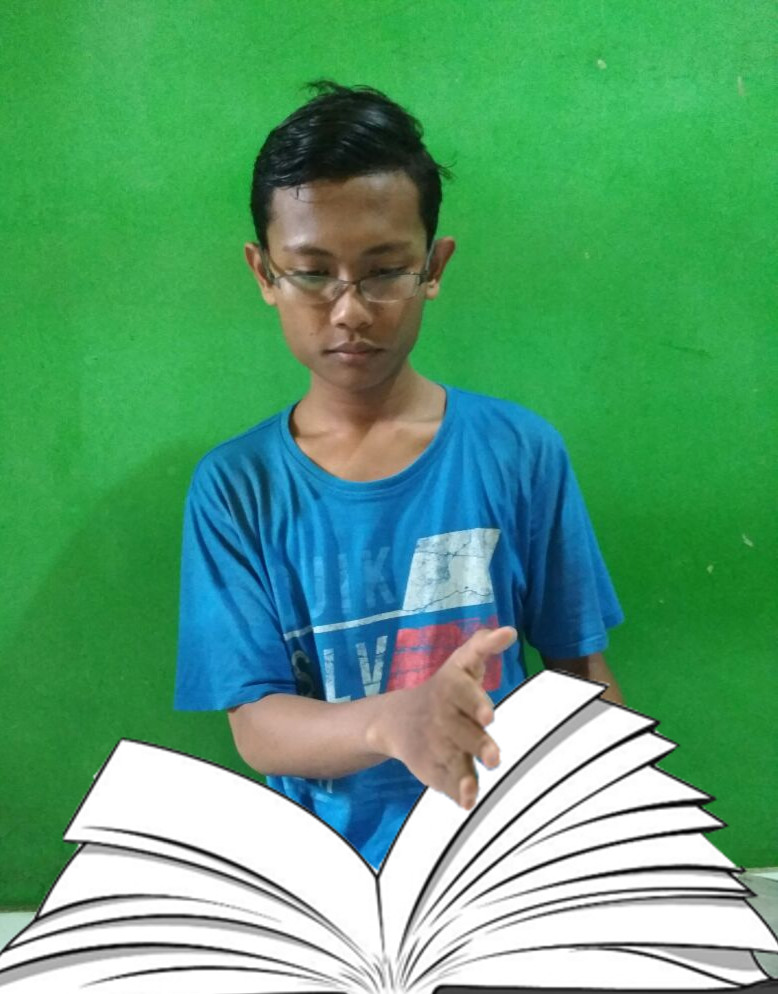

|
Nama Lengkap | : Arkan Fauzan Ayyasyi |
| Nama Panggilan | : Arkan | |
| Tempat Tanggal Lahir | : Depok,1 Januari 2001 | |
| Alamat | : Jl.Pemuda No.46 Sukamaju, | |
| Cilodong, Depok | ||
| pendidikan | : TK.Ra.Kembang 2 | |
| : SMP Negeri 4 depok | ||
| : SMK-SMAK Bogor |
Nama saya Arkan Fauzan Ayyasyi, saya biasa dipanggil Arkan. Saya lahir di Depok, 1 Januari 2001. Saat ini saya bertempat tinggal di Jalan Pemuda No.46 Sukamaju, Cilodong, Depok. Saya hanya mempunyai satu adik laki-laki bernama Fatir Airul Faturrahman. Saya mempunyai banyak hobi, tetapi yang paling kusukai adalah jogging dan membaca buku

Jogging di akhir pekan merupakan hobi yang sangat kusukai. Jogging sangat bagus untuk kesehatan karena dapat memperlancar aliran darah, mencegah terkena serangan jantung, ditambah lagi jogging dilakukan di pagi hari yang masih kaya akan oksigen sehingga kesehatan tubuh dapat terjaga dengan baik. Jogging tidak terlalu melelahkan sehingga dapat dijadikan sebagai refreshing untuk menenangkan pikiran dari padatnya aktifitas kita. ketika aku masih SMP aku hampir jogging setiap akhir pekan, tetapi ketika aku masuk SMAKBO aku sudah jarang melakukan jogging. Hal ini dikarenakan tugas sekolah yang banyak dan aku orang yang suka menunda pekerjaan sehingga tugasnya menumpuk dan aku harus begadang untuk menyelesaikannya. Karena itu aku lelah dan akhir pekan kujadikan sebagai waktu istirahat (tidur dan lain sebagainya).
Buku adalah sumber ilmu. Bagaimana tidak? semua hal yang ingin kita ketahui ada di buku, mulai dari materi palajaran sekolah, berita, ilmu pengetahuan, dan masih banyak lagi. Apalagi pada zaman sekarangini kita dimanjakan dengan mudahnya memperoleh informasi dan sudah tersedia pula buku elektronik (ebook). Dengan mudahnya memperoleh informasi tersebut, kenapa kita tidak memanfaatkannya dengan baik?. Oleh karena itu aku suka membaca buku. bagiku membaca buku merupakan suatu kewajiban yang berdampak positif kepada diri kita sendiri. Aku sudah terbiasa membaca buku sejak kecil mulai dari buku ensiklopedia hewan dan tumbuhan hingga buku tentang kimia (karena aku sekolah di SMAKBO).
Thank You For visit my site :)